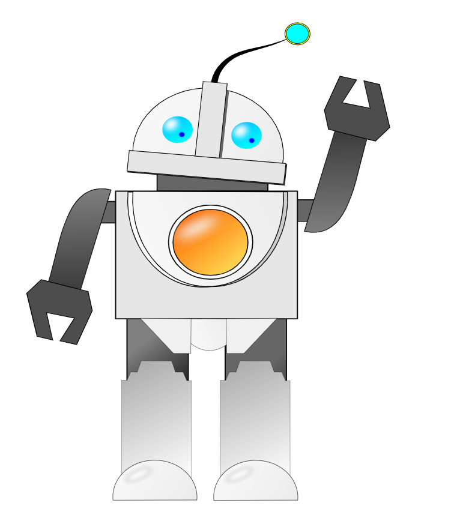
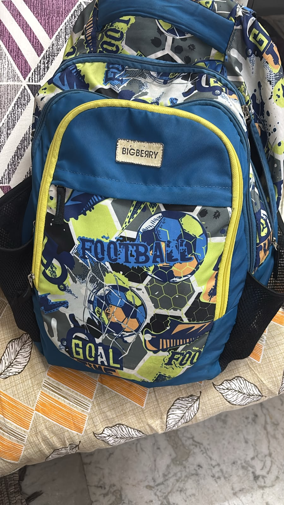

Remember me? I was there at your last birthday too! But this time, I'm guarding a little secret. Want to find your birthday surprise?
Look under your pillow... ohhh wait... I didn't keep it there.
Look outside your door... it finally landed.
...nee moham not here.
It is under your laptop, Brainy Jiii.
heyyy i dropped your gift in this thing...open the yellow zip!

happppppyyyyy birthdayyy brainyyy jiii be happpyyyy keep smilinggggg